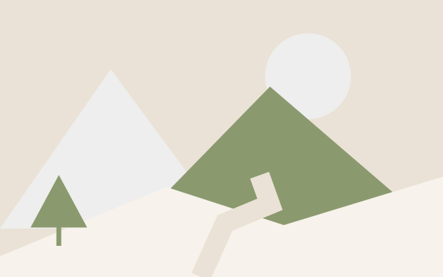
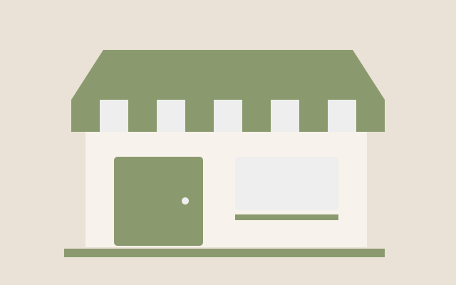

Tecnología
Ideas pequeñas, soluciones que conectan
Un laboratorio de creación acerca la tecnología a la vida cotidiana.
Una mirada cercana a lo que nos conecta
Educación · Tecnología · Turismo · Comercio
Descubre historias e ideas que conectan con tu día a día.
Historia destacada · Educación
Una biblioteca comunitaria conecta a estudiantes, libros e ideas para imaginar nuevas formas de aprender.
Explorar la historia
Tecnología
Un laboratorio de creación acerca la tecnología a la vida cotidiana.

Turismo
Senderos y encuentros locales invitan a viajar con curiosidad.

Comercio
Emprendimientos de barrio comparten sus productos e ideas.
Guarda lo que te interesa y vuelve a leerlo cuando quieras.